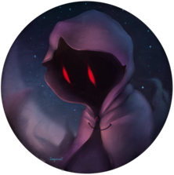

This great picture was made by Impareon
My Projects
Twitter - Github - Itch.Io - Portfolio - ImpressumThis great picture was made by Impareon
Gruv-Beef-Theme
A visual theme for the Beeflang IDE that imitates the gruvbox color scheme that is available for lots of other ide's. It has a very old school look and is easy on the eyes | Github
Floppy Control
A short puzzle game made in Unity engine in 48 hours. This was my project for my first gamejam. The 2020 GameMakersToolkit gamejam with the theme being: "Out of control". Thats why you dont control the robot directly, but rather influence him with floppy disks. It only has 10 levels with the last level never being beaten before | Download